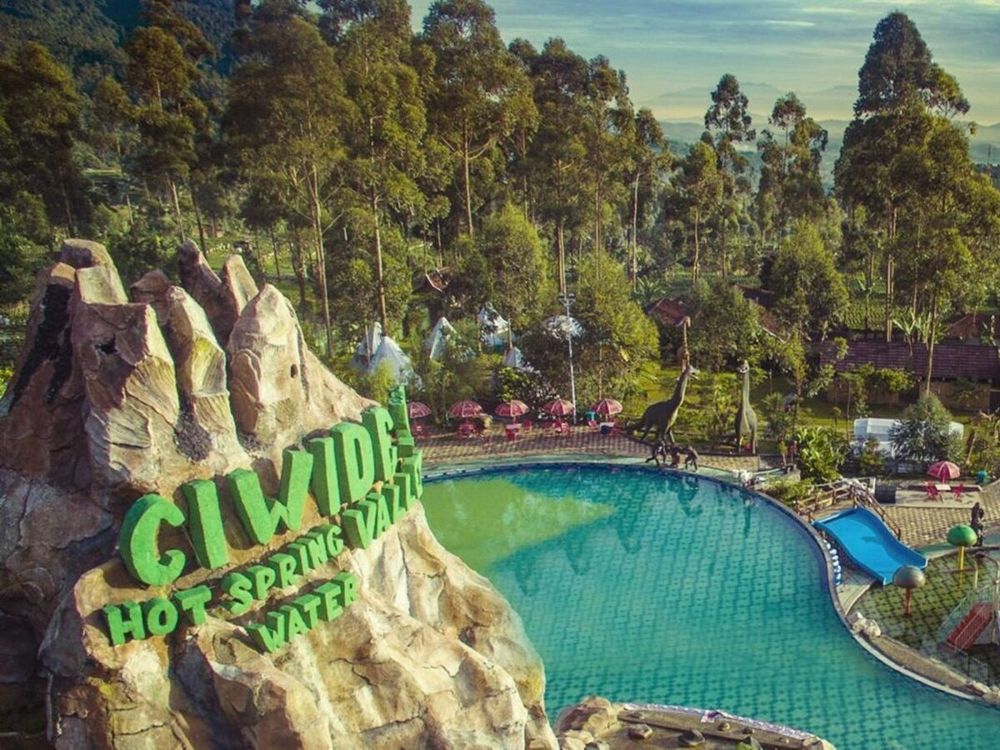
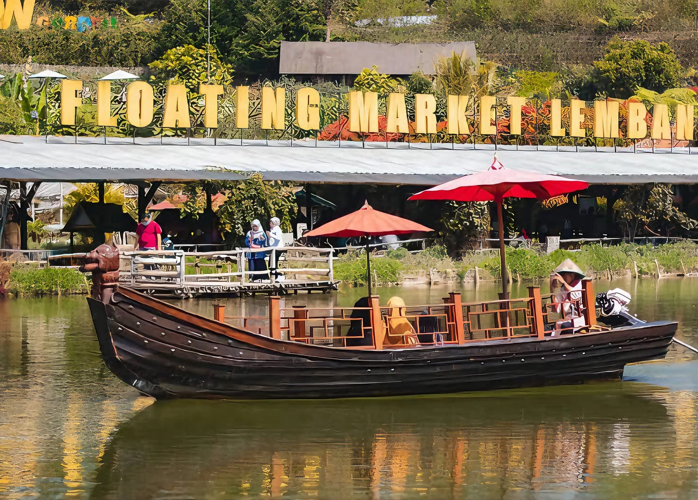
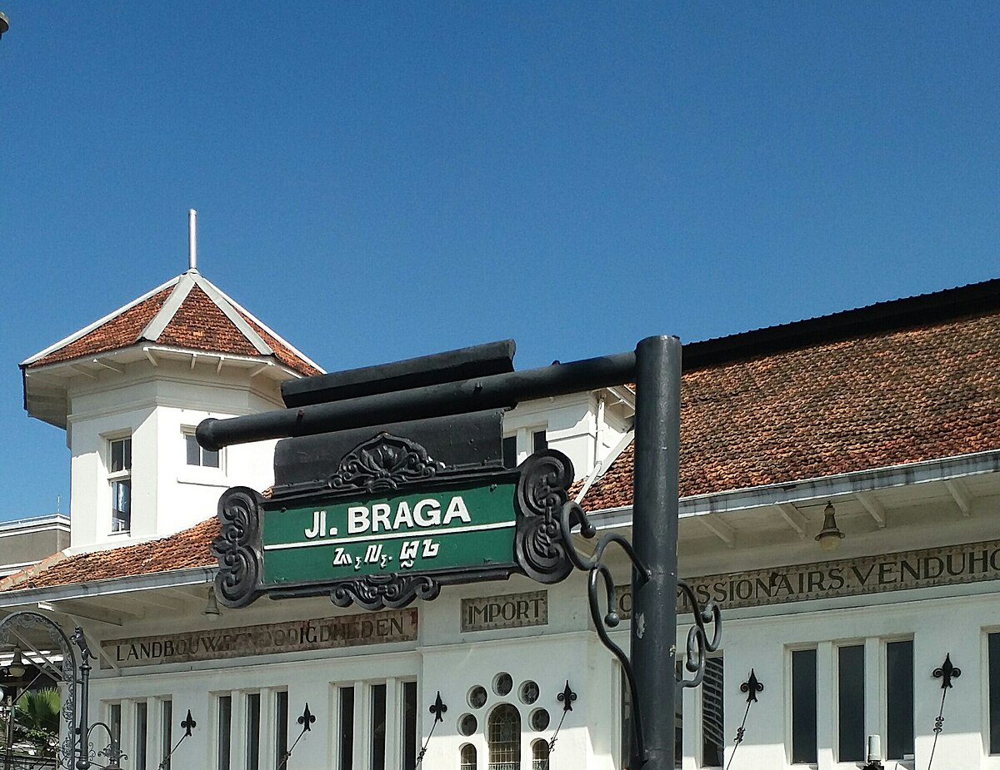
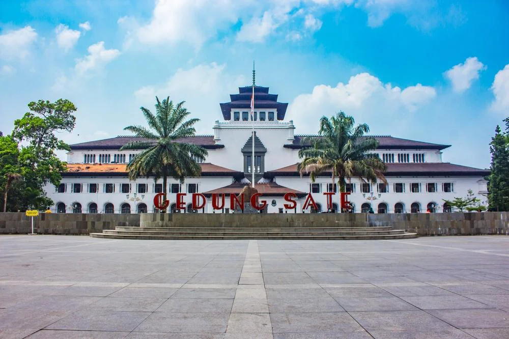

Ciwidey adalah sebuah kecamatan di Kabupaten Bandung, Jawa Barat, yang terkenal sebagai destinasi wisata dataran tinggi berudara sejuk dan asri. Daerah ini menawarkan berbagai objek wisata alam populer, di antaranya Kawah Putih yang ikonik, situ Patenggang, Ranca Upas, serta perkebunan teh dan stroberi yang hijau. Dengan suhu yang dingin—bisa mencapai 8-10 derajat Celcius saat cuaca ekstrem—Ciwidey menjadi tempat favorit untuk liburan keluarga, berkemah, dan relaksasi di kolam air panas.
Lembang adalah sebuah kecamatan di Kabupaten Bandung Barat yang terletak di dataran tinggi pegunungan (sekitar 1.300–2.000 mdpl), menjadikannya destinasi wisata populer dengan udara sejuk, pemandangan alam yang asri, serta suhu rata-rata 17°-27°C. Dikenal sebagai daerah subur, Lembang juga menjadi pusat pertanian, perkebunan, dan peternakan susu sapi, selain menawarkan berbagai atraksi wisata populer seperti Gunung Tangkuban Perahu, Orchid Forest, dan Farmhouse.
Jalan Braga merupakan ikon wisata legendaris di pusat Kota Bandung yang menawarkan nuansa kolonial Belanda dengan deretan bangunan Art Deco yang masih kokoh terjaga. Terkenal sebagai pusat keramaian sejak era 1920-an, kawasan ini dulunya dikenal sebagai "Paris van Java" karena menjadi pusat gaya hidup elit dengan deretan butik, kafe, dan toko roti ternama. Saat ini, Braga menjadi destinasi wajib yang memadukan suasana klasik, wisata kuliner estetik, galeri seni, dan spot foto vintage yang populer bagi wisatawan.